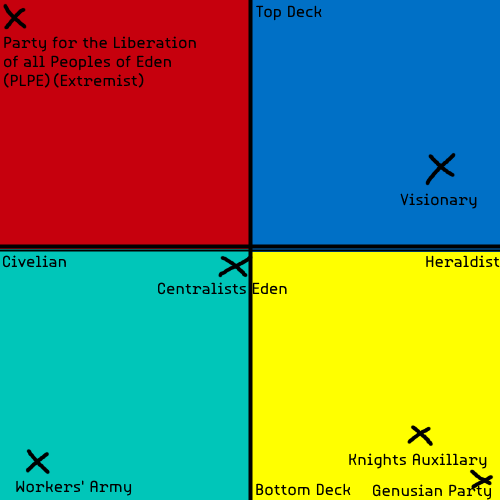

New Eden is perhaps the most important location in Providence. It is the city-state that deploys the Angels and it is the main emerging power within the Resemblance. Located East of the Aven in the Eastern sectors of the Old Sadon Administration, New Eden is also the most technologically advanced civilisation in the region, in the middle of an industrial boom. The vast industry takes its toll on the citizens however who live in fear of the Angels as much as they rely on them.
After Eden was scorched by the Saimonites, it was the Knights who pulled together survivors to re-fortify the city walls; not that there was much need, as Good Saimon had been obliterated by Eden's countermeasures. Reforming the rubble into new homes, they built a New Eden from the ash, which would never be brought down again. Expedition teams were sent to the heart of Good Saimon to recover the Angel, a worker-machine that had been prototyped in their labs. The Knights used their combined scientific and military knowledge to turn the peaceful Angels of agriculture into an infamous weapon of neverending war - it was because of them that the triple pointed head of an Angel with one green eye is the most afeared sight in the Resemblance, yet it was not to be a wasted effort, as the Angels proved to be invaluable in establishing New Eden as the unquestionable force of the region.
New Eden, at the time of Lazarus Rises, is ruled by the Knights' Council and a parlimentary government. A joint technocracy and democracy; the Knights have full control over the standing military and the New Eden Sanctioners. The Ruling Party has absolute authority over economic matters and transportation, alongside managing the factories in the Industrial Quarter.
The city-state is politically divided in one axis between expansionists, who wish to further the goals of pre-war Eden (i.e. conquering the Resemblance), and reservists, who believe New Eden should focus on developing their own city. In the other axis are those who support the Knights' Council and those who deny its authority, calling for full democracy in Eden.
The first speaker in an Edenic political debate is traditionally decided via a game of card called Qetsu. At the start of this game, the deck is split into two: the top is to be given to the Reservists, whilst the bottom is bestowed upon the Expansionists. This gave rise to the idiomatic referral of Edenic parties as "Top Deck" or "Bottom Deck" just as we might say "Left Wing" or "Right Wing". Other parties are generally referred to as low-deck or high-deck depending on their policies, however they do not usually take part in the game.
The most powerful political parties in New Eden are shown on the compass below (note: proportions slightly off in this chart) :
